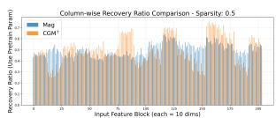

Figureure 1 · : Performance comparison of our methods (CGM and CGM<sup>†</sup>) agaiFig. 1: Performance comparison of our methods (CGM and CGM<sup>†</sup>) against baselines for LLaVA fine-tuned on OKVQA. We evaluate general knowledge retention (Pre-Avg: average performance of pre-training tasks), specialization on the new task (Target), and the harmonic mean of both (Hscore) to measure the overall balance.这张图/表用于判断 Curvature-Guided Mixing for MLLM Adaptation 的实验收益来自哪里。重点看替换、消融或跨模型设置下趋势是否一致，而不是只看单个最高分。

(c) Sparsity = 0.5 Fig(c) Sparsity = 0.5 Fig. 6: Quantitative comparison of column-wise recovery ratios between CGM<sup>†</sup> (orange) and Magnitude (Mag, blue) at varying update sparsity levels. The Y-axis represents the fraction of pre-trained parameters kept. Across all sparsity levels, CGM<sup>†</sup> exhibits a non-uniform, structured selection that consistently targets or protects the same columns, whereas the Magnitude baseline remains uniform and difuse.这张图/表用于判断 Curvature-Guided Mixing for MLLM Adaptation 的实验收益来自哪里。重点看替换、消融或跨模型设置下趋势是否一致，而不是只看单个最高分。